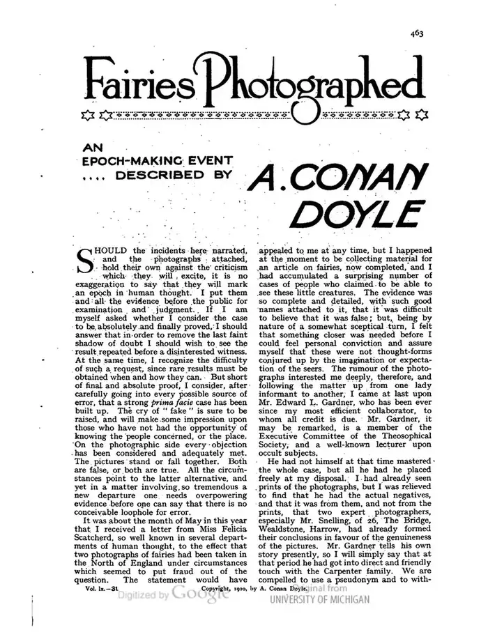
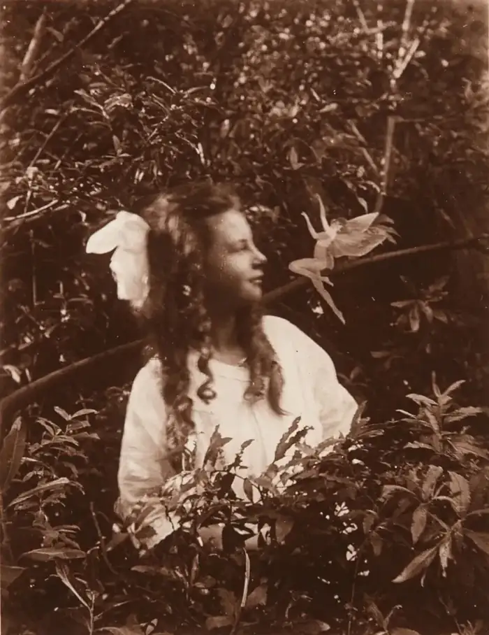
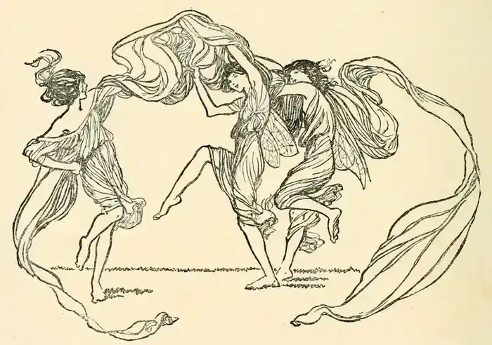

The photographs
In 1917 Elsie Wright, sixteen, and Frances Griffiths, nine, produced photographs taken in the garden at Cottingley, near Bradford, showing small winged figures among the leaves. In 1920 the images reached Arthur Conan Doyle, who was a spiritualist, and he published them in The Strand as evidence of a real phenomenon.
Maps, diagrams and images






The photographs were defended for decades by believers, including Doyle, who took them as proof that the spirit world was photographable. The girls maintained the story into adulthood.
The admission
In 1983, Elsie and Frances admitted the fairies were paper cut-outs — traced from a book, painted, and pinned to the foliage with hatpins. The photographs are sharper than the fairy figures, which are flat and evenly lit, and the figures cast no shadow that matches the scene.
One of the five photographs has never been fully explained to everyone's satisfaction — the last one, which shows a blur of gauze. That gap is the part believers cite, and it is a gap about one image, not about the series.
Documented: four of the five photographs were faked with paper cut-outs; the makers said so.
Documented: Conan Doyle published them as genuine, in good faith.
Disputed: the fifth photograph, which the sisters described differently at different times.
The lesson: a sincere, intelligent, motivated witness is not evidence — Doyle wanted the photographs to be true, and that is why they were believed.
Not claimed: that the girls were fraudsters. They were children who made a joke that adults turned into a movement.
Why it is in the archive
Because it is the archive's best illustration of how belief propagates through credentials. The photographs are unremarkable; the fact that a famous author vouched for them is what made them evidence, and that is exactly the error the four labels exist to catch.
Open resources on this topic
- PapersOpen-access articles: DOAJ · PubMed Central · Internet Archive Scholar
- BooksPublic-domain and borrowable copies: Open Library · Project Gutenberg · Google Books · Internet Archive
Cite this page
Momin, S. (2026). The Cottingley Fairies. The Larger World Archive. https://drsamonline.github.io/LARGE_GLOBE/cottingley-fairies.htmlMomin, Sohil. “The Cottingley Fairies.” The Larger World Archive, 2026, https://drsamonline.github.io/LARGE_GLOBE/cottingley-fairies.html.Momin, Sohil. “The Cottingley Fairies.” The Larger World Archive, 2026. https://drsamonline.github.io/LARGE_GLOBE/cottingley-fairies.html.@misc{the2026cottingley,
author = {Momin, Sohil},
title = {The Cottingley Fairies},
year = {2026},
howpublished = {The Larger World Archive},
url = {https://drsamonline.github.io/LARGE_GLOBE/cottingley-fairies.html},
note = {Last reviewed 20 November 2026}
}Last reviewed 20 November 2026 · Corrections policy · this page is not peer reviewed
Sources for this page
- Wikipedia, “Cottingley Fairies” — the photographs, the believers and the admissionen.wikipedia.org
- Wikipedia, “Arthur Conan Doyle” — the spiritualism that made him a witnessen.wikipedia.org
- Wikipedia, “Spiritualism” — the movement the photographs serveden.wikipedia.org
- Wikipedia, “Photographic forgery” — how such images are analyseden.wikipedia.org
- Archive.org — Conan Doyle, The Coming of the Fairies (1922)archive.org/details/cu31924028957599